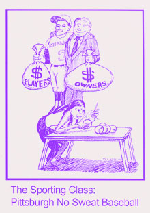

Milwaukee Brewers get Sweatshop Education from Mike Howden and Big Charlie K
Submitted on Thu, 09/22/2005 - 11:06pm
Disclaimer - The following article is reposted here because it is an issue with some relevance to the IWW. The views of the author do not necessarily agree with those of the IWW and vice versa.
http://www.shepherd-express.com/9_1_05/newsandviews.htm - Inside Baseball
MLB accused of avoiding labor responsibility - By Barbara Miner
Baseball is about statistics--lots of them. Here are a few you may want to keep in mind the next time the Brew Crew's Geoff Jenkins or Brady Clark hits one out of the park.
Baseballs used in the major leagues are hand sewn at a factory in Turrialba, Costa Rica, run by Rawlings Sporting Goods. Workers at the factory make roughly four baseballs per hour, which requires about one stitch every 8.3 seconds, or 4,536 stitches in a 10.5-hour shift.
The Costa Rican workers are paid about 28 cents per ball, for an annual wage of less than $3,000 a year, which barely brings them above the country's poverty level.
In 2005, the average salary for a Major League Baseball (MLB) player was $2,632,655, according to Baseball Almanac. There are 162 regular season games, for a per game average of $16,250.
A worker at the Costa Rican plant would have to sew approximately 58,000 balls--which would take about seven years--to earn the average MLB player's take from a single game.
If the numbers strike you as unfair, you're not alone. The New York-based National Labor Committee has been urging Major League Baseball to adopt a code of conduct for all companies producing its licensed equipment and clothing. The committee is particularly concerned that workers at the Costa Rican baseball factory do not have the right to organize and many are afraid to speak out for fear that they will lose their jobs.
"You have Costa Ricans making professional baseballs for some of the wealthiest people in the world, and their wages have been stagnant for 13 years," said Charlie Kernaghan, director of the National Labor Committee. "Baseball does not have to ride on the backs of sweatshop workers."
Making the Problem Known
The committee, founded in 1981, has been a leader in the movement against global sweatshops. In 1996, the committees report on TV personality Kathie Lee Giffords use of sweatshop labor in Honduras to produce her clothing line became a watershed in anti-sweatshop efforts and brought national attention to the problem.But raising awareness of the origins of baseballs hasnt been as effective.
Nicole Saunches, assistant director of media relations for the Milwaukee Brewers, said she was unaware of the controversy surrounding the sweatshop conditions under which Major League baseballs are made. "This is the first that I have heard of that," Saunches said.
But in February 2004, the National Labor Committee released a report titled Foul Ball, which detailed wages and working conditions at the Costa Rican baseball factory.
While the Foul Ball report garnered some media coverage, Kernaghan said the committee has been disappointed by the lack of response from Major League Baseball.
Robert Manfred Jr., a MLB vice president in charge of labor relations and human resources, responded in a Feb. 25, 2004, letter "that our agreements routinely include provisions that require our partners to comply with applicable laws At the same time, I am sure you understand that we are not in a position to actively regulate the practices of each and every separate company with which we do business."
John Goldstein, president of the Milwaukee County Labor Council, said the conditions under which the baseballs are made are an unfortunate example of problems under agreements such as the Central American Free Trade Agreement signed by President Bush in early August and awaiting full approval by all Central American countries. The treaties grant trade protections for global corporations, many based in the United States, allowing them to cut costs. Yet the treaties do not protect basic workers rights or ensure adequate wages, leading to a situation where U.S. corporate profits are based on increased poverty in developing countries.
"Baseball is a great symbol of why these are such bad agreements," Goldstein said.
Milwaukee activists involved in free and fair-trade issues held protests several years ago highlighting Major League Baseballs use of clothing and paraphernalia made under sweatshop conditions. Currently, the most active issue around sweatshop labor involves the Milwaukee Clean Clothes Campaign, which calls upon local governmental bodies to refuse to buy sweatshop-made clothing for police, fire, security or recreational/athletic personnel. So far, the City of Milwaukee and the Milwaukee School Board have agreed to abide by the Clean Clothes Campaign.
"Our next step is to get Milwaukee County to pass a similar measure," said Michael Howden, campaign coordinator.
A Lack of Options
Unlike clothing, chocolate or coffee, there is no fair trade alternative for baseballs. Rawlings has had an exclusive contract to supply professional baseballs since 1977.
Rawlings had been making the baseballs in Haiti but moved to Costa Rica after fears of political instability following the 1986 coup that deposed dictator Jean-Claude Duvalier. In Costa Rica, it was awarded a 54,000-square-foot free-trade zone in Turrialba. It pays no taxes and is allowed to import, duty-free, the cowhide, baseball cores and yarn from U.S.-based providers.
According to the National Labor Committee, workers often arrive at the plant by 6 a.m. and work till 5:30 p.m. They must fill their quota of 156 baseballs a week or they can be fired. The pay is roughly a penny above the legal minimum wage.
Many workers sewing the baseballs last for only two or three years; repetitive stress injuries, in particular carpal tunnel syndrome, is the most serious problem. Dr. Carlos Guerrero, who worked at the Rawlings plant as a company doctor in 1998 and at a local clinic for seven years before that, told The New York Times that about a third of the workers developed carpal tunnel syndrome.
The National Labor Committees Kernaghan says he has three demands. "First, Rawlings should bring in an independent group to do ergonomics training and reduce repetitive stress injuries. Second, the workers must be paid at least a subsistence level wage. Lastly, workers must have the right to organize."
"These problems shouldnt be that hard to clean up," Kernaghan said. "But I don't think Major League Baseball has felt enough pressure."